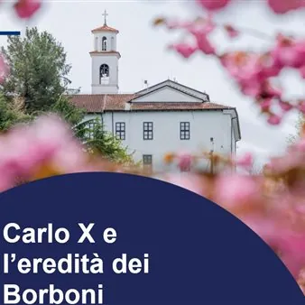

da ven 6 nov a mer 11 nov
Carlo X e l’eredità dei Borbone. 190 dopo : la memoria di uno spazio condiviso
Programma: venerdì 6 novembre - ore 17.00 Convento Francescano di Kostanjevica, Škrabčeva ulica 1- Nova Gorica Serata di dibattito “I Borboni nel Goriziano” Con la partecipazione dello storico dott. Renato Podbersič e dell’ex ambasciatore e storico dott. Janez Šumrada sabato 7…
 Indicazioni
Indicazioni
- Costi e prenotazioni
- Costo non indicato · Prenotazione non indicata
- Programma
- Programma da verificare. Apri la fonte ufficiale per orari e possibili aggiornamenti.
- In caso di maltempo
- Nessuna indicazione specifica pubblicata.
- Note
- Acquisito automaticamente dalla fonte.
L’EVENTO
Descrizione completa
Programma:
venerdì 6 novembre - ore 17.00
Convento Francescano di Kostanjevica, Škrabčeva ulica 1- Nova Gorica
Serata di dibattito “I Borboni nel Goriziano”
Con la partecipazione dello storico dott. Renato Podbersič e dell’ex ambasciatore e storico dott. Janez Šumrada
sabato 7 novembre
ore 10.00 – Palazzo Coronini, viale XX settembre 14
"La passeggiata del re. Da Palazzo Coronini a Castagnevizza"
Visita alla Sala Di Carlo X a Palazzo Coronini e passeggiata fino al Convento Francescano di Kostanjevica (in italiano e sloveno)
Prenotazione obbligatoria (entro il 5 novembre): info@coronini.it
ore 10.00 e 11.00 – Villa Coronini, Trg Ivana Roba 3a - Šempeter pri Gorici
visita guidata in lingua slovena
ore 12.00 – Convento Francescano di Kostanjevica, Škrabčeva ulica 1 - Nova Gorica
visita guidata in sloveno e italiano
ore 13.00 – Convento Francescano di Kostanjevica, Škrabčeva ulica 1 - Nova Gorica
proiezione del documentario “Carlo X: – I Borboni nel Goriziano” (con sottotitoli in italiano)
ore 14.00 – Convento Francescano di Kostanjevica, Škrabčeva ulica 1- Nova Gorica
ore 12.00–16.00 – Convento Francescano di Kostanjevica, Škrabčeva ulica 1- Nova Gorica
laboratori gratuiti per bambini
ore 15.00 – Convento Francescano di Kostanjevica, Škrabčeva ulica 1- Nova Gorica
visita guidata in lingua italiana
ore 16.00 – Convento Francescano di Kostanjevica
ore 14.00–18.00 – Palazzo Coronini, viale XX settembre 14
Giornata delle porte aperte, ingresso gratuito a Palazzo Coronini
ore 09.00–17.00 – Convento Francescano di Kostanjevica, Škrabčeva ulica 1 - Nova Gorica
Giornata delle porte aperte, ingresso libero
Saranno esposti paramenti liturgici e oggetti appartenuti alla famiglia reale.
lunedì 9 novembre
ore 18.00 - Libreria e caffetteria Maks, Delpinova ulica 12 - Nova Gorica
Serata di dibattito “Il francese nella zona di Nova Gorica” e la sfida della traduzione
Un dibattito con le insegnanti di lingua francese sull’insegnamento del francese al Liceo ginnasio di Nova Gorica. Una conversazione tra gli studenti del Liceo Ginnasio di Nova Gorica e il traduttore, scrittore, nonché critico letterario e teatrale Aleš Berger. Verranno letti brani letterari degli studenti di Nova Gorica in sloveno e in francese.
martedì 10 novembre
ore 18.00 - Sala teatrale del Liceo Ginnasio, Rejčeva ulica 1/b – Nova Gorica
Cerimonia in memoria del re francese Carlo X e della dinastia dei Borboni: “Il re nella città delle rose”
mercoledì 11 novembre
ore 17.00 - Convento Francescano di Kostanjevica, Škrabčeva ulica 1 - Nova Gorica
Messa solenne in memoria del re francese Carlo X di Borbone
Tutte le attività e le visite guidate sono gratuite
IL PROGRAMMA
Programma e orari
Appuntamenti raccolti dalle fonti elencate. Dove manca un orario, non è ancora disponibile in questa scheda.
Programma pubblicato
- ore 10.00
- ore 10.00 e 11.00
- ore 12.00
- ore 13.00 –
- ore 14.00
- ore 12.00–16.00 –
- ore 15.00
- ore 16.00 –
- ore 14.00–18.00
- ore 09.00–17.00
- ore 18.00
- ore 17.00
INFORMAZIONI UTILI
Prima di partire
- Controllare la fonte prima di partire.
ORGANIZZAZIONE